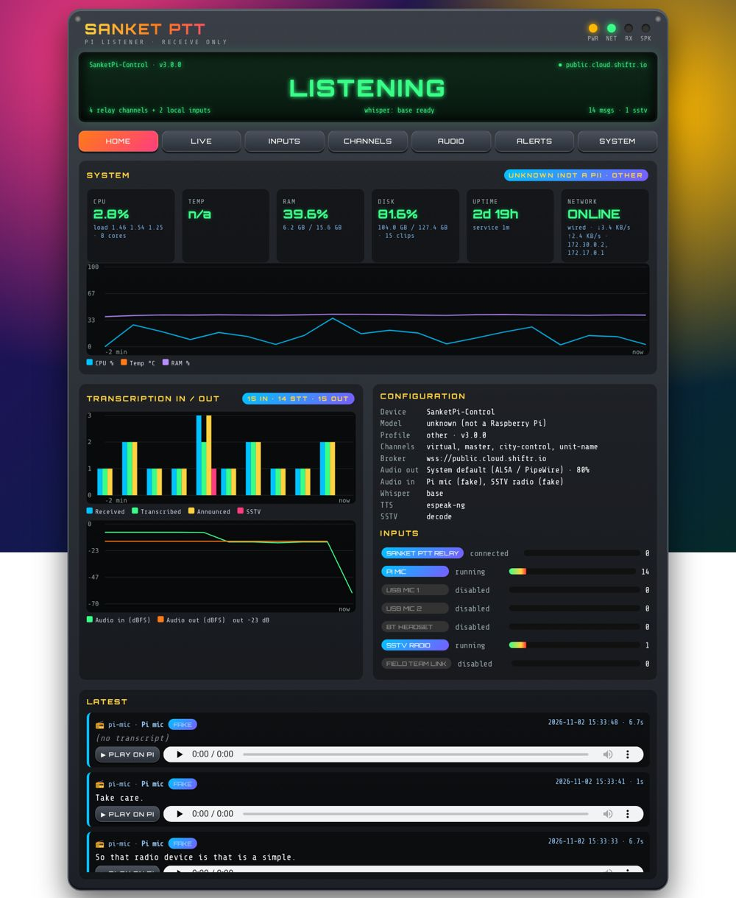
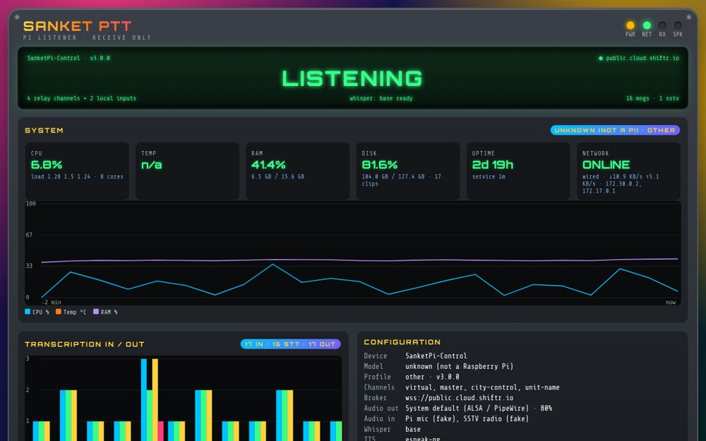
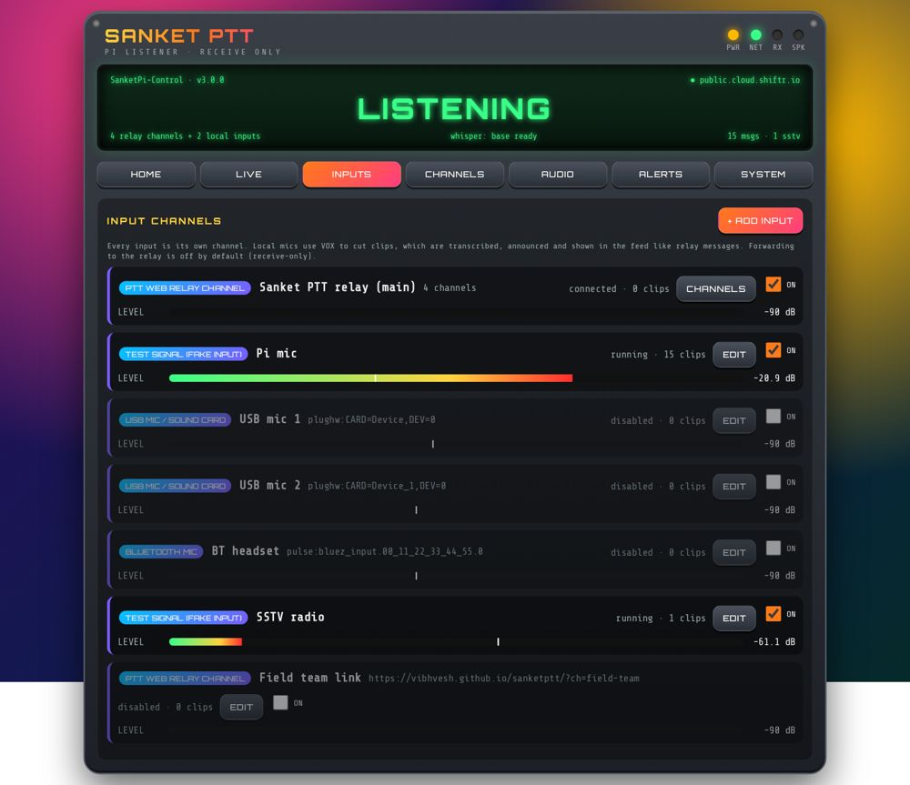
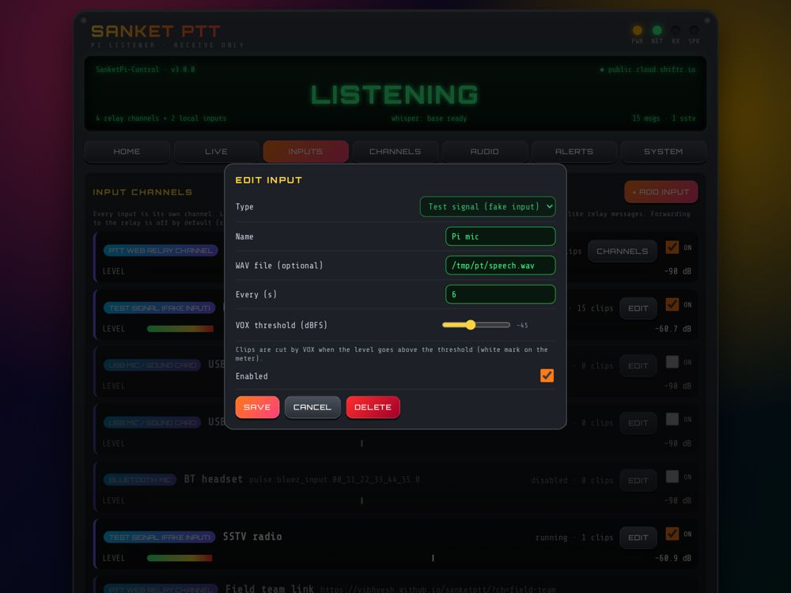
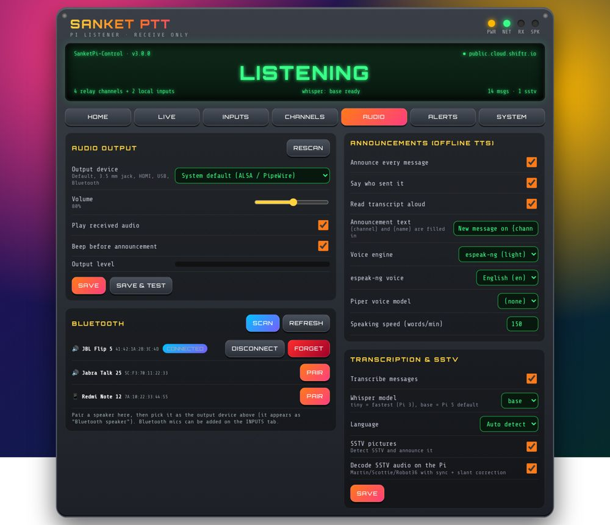
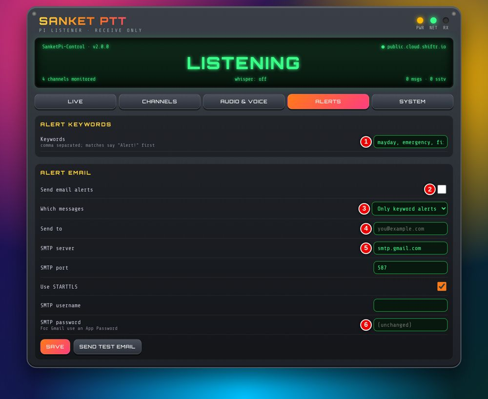
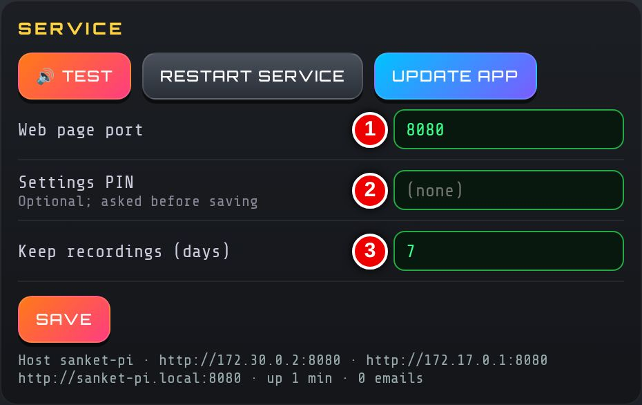

Sanket Edge — User Guide
Raspberry Pi listening station for police and emergency control rooms
Sanket Edge turns a Raspberry Pi and a speaker into an always-on listener. It plays every Sanket PTT transmission, transcribes it on the Pi, reads it aloud, and raises alerts. It is receive-only unless you turn on forwarding for a local mic.
1. One-touch install
- Use a Raspberry Pi 5 (recommended) or Pi 3 with Raspberry Pi OS (Desktop or Lite), connected to the internet and a speaker.
-
Open a terminal on the Pi and run:
curl -fsSL https://vibhvesh.github.io/sanketptt/pi/install.sh | bash
-
Wait for it to finish. It prints the web page address.
- Run the same command any time to upgrade. Settings, recordings and voices are kept.
Options: add SANKET_KIOSK=0 to skip the full-screen display, SANKET_KIOSK=1 to force it, or SANKET_HW=pi3|pi5 to choose the board profile, e.g. curl -fsSL …/install.sh | SANKET_KIOSK=0 bash.
2. Dashboard and kiosk
- On any phone or PC on the same network, open http://<pi-name>.local:8080 (or http://<pi-ip>:8080).
- Home shows system health (CPU, temperature, RAM, disk, network), message graphs, input levels and the latest messages.
- Live shows the message feed with transcripts, alerts, SSTV pictures and playback.
- With a display attached, the Pi logs in on boot and opens the dashboard full screen (kiosk). If the browser closes, it reopens.


3. Inputs
Every input is a channel, listed on the Inputs tab.
- Relay: a Sanket PTT channel link (
…/?ch=name). Add more with + Add input.
- Pi mic, USB mics / sound cards (one channel each) and Bluetooth mics.
- Local inputs use VOX: set threshold, hang time and gain with Edit. Watch the level meter while someone speaks.
- Forwarding a local input to the relay is off by default.


3a. RTL-SDR receiver
Plug an RTL2832U/R820T USB dongle into the Pi and add an RTL-SDR receiver input (Inputs → + Add input). It runs rtl_fm and feeds the audio through the same VOX → recording → offline transcription → announcement → dashboard path as the mic inputs. Works on Pi 3 and Pi 5.
- Settings per input: frequency (MHz), mode (NFM, FM, WBFM, AM), squelch (0 = off), tuner gain (
auto or dB), sample rate, PPM correction, dongle index. You can also give a comma-separated scan list and a dwell time. The receiver stays on a frequency while a transmission is in progress.
- Presets: FM broadcast 88-108 (WBFM), airband 118-137 (AM), 2 m ham 144-146 (NFM), 70 cm ham 430-440 (NFM), marine VHF 156-162 (NFM).
- Detect dongle runs
rtl_test and shows what it finds. The level meter shows the received audio level.
- The installer adds the
rtl-sdr package, blacklists the dvb_usb_rtl28xxu TV driver and adds a udev rule. Unplug and replug the dongle (or reboot) after the first install.
- Legal: this is receive only. Listen only to public bands or bands you are licensed to listen to (broadcast, airband, amateur, marine). Do not monitor police, government or private communications. That is restricted under the Indian Wireless Telegraphy Act.
Spectrum sweep / activity monitor. Add an RTL-SDR spectrum sweep input to watch whole bands with rtl_power. It does no demodulation and records no audio or content. It only measures power per frequency bin.
- Settings: bands (
start-end in MHz, comma separated, e.g. 430-440, 144-146), bin size (kHz), sweep interval, alert threshold (dB above noise floor), allowlist of expected frequencies (MHz) with a tolerance, optional spoken alert, tuner gain, PPM, dongle index.
- A noise floor is learned for each bin. A bin that rises above floor + threshold and is not on the allowlist is logged as suspicious activity with time, frequency, peak dB and duration. With spoken alerts on, the Pi says e.g. "Unknown signal at 446.1 megahertz".
- The Home dashboard shows the latest sweep as bars with the floor and threshold lines, a short waterfall, and the activity log. Export CSV downloads the log (
/api/sweep.csv).
- One dongle, one mode. A receiver and a sweep cannot use the same dongle index at the same time. Saving a second one is refused with a message. Disable the other input first or use a second dongle.
- The monitor logs signal presence only, for reporting to WPC monitoring. It does not intercept content.
4. Audio output and Bluetooth
- Open Audio and choose the output: default, 3.5 mm jack, HDMI, USB or Bluetooth speaker.
- Set the volume and press Play & test.
- For Bluetooth: put the speaker in pairing mode, tap Scan, then Pair and Connect. Use Disconnect or Forget to remove it.

5. Announcements and transcription
- Each message is played, then announced: "New message on <channel> from <name>", then the transcript is read out.
- On Audio, turn announcements on or off, edit the text and choose the voice (Piper or espeak-ng) and speed.
- Transcription runs offline (Whisper). Choose the model and language, or Auto detect.
6. Alerts and PIN
- On Alerts, enter keywords (e.g. mayday, emergency). A match is announced with "Alert! Alert!" first.
- Optionally turn on alert email, fill in the SMTP details and press Send test email.
- On System, set a Settings PIN right after installing. Anyone can view the dashboard; changes need the PIN.


7. Always on
- Starts on boot and restarts automatically if it stops.
- A hardware watchdog reboots the Pi if it hangs.
- Wi-Fi power-save and screen blanking are turned off; the relay reconnects on its own.
8. Pi 5 versus Pi 3
| Board |
Transcription |
Voice |
SSTV decode |
Kiosk browser |
| Pi 5 / Pi 4 |
Whisper base |
Piper |
On |
Chromium |
| Pi 3 / Zero 2 |
Whisper tiny |
espeak-ng |
Off |
surf (Desktop) / skipped on Lite |
Defaults are set once at first install; your later changes are kept.
9. Troubleshooting
| Problem |
Fix |
| Page will not open |
Use the IP: run hostname -I on the Pi, open http://<ip>:8080. |
| No sound |
Check speaker power and output device on Audio; press Play & test. |
| Bluetooth speaker silent |
Scan → Pair → Connect again, then select it as output. |
| Mic input never triggers |
Lower the VOX threshold; check the level meter. |
| Slow transcripts on Pi 3 |
Keep the tiny model. |
| Check the service |
sudo systemctl status sanket-pi · logs: journalctl -u sanket-pi -f |
| Update |
System → Update app, or rerun the install command. |
10. Support
Akshat Singh · akshatsingh@canberravision.com